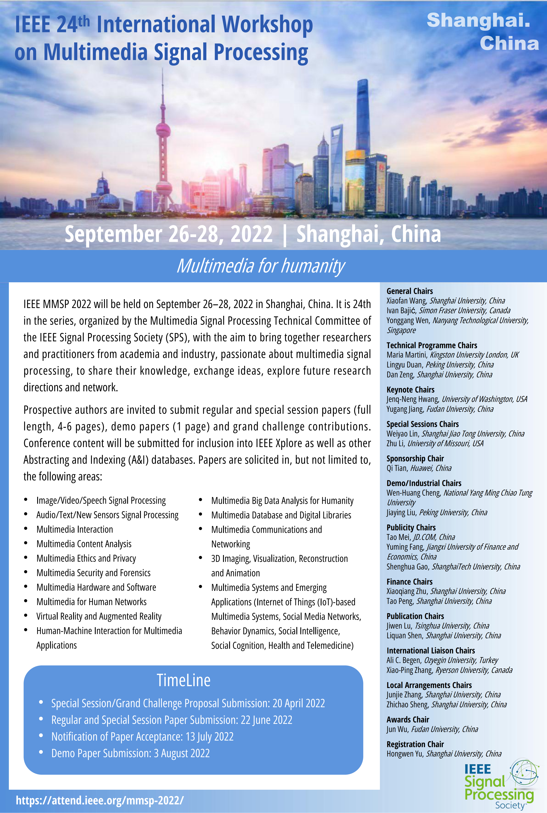
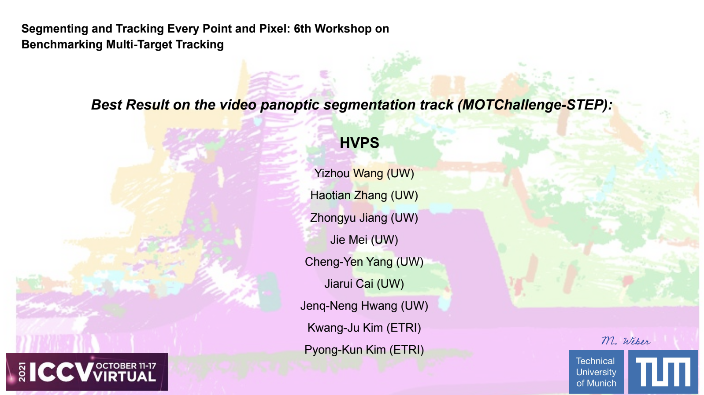
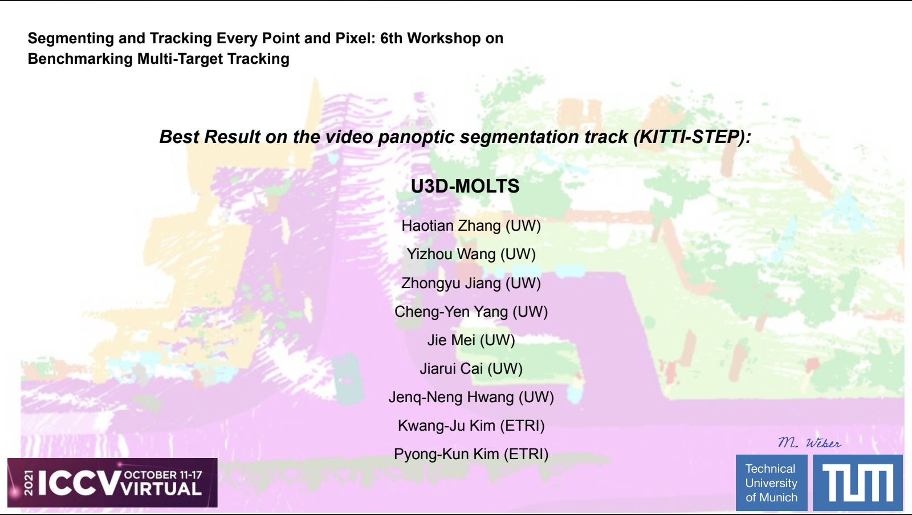
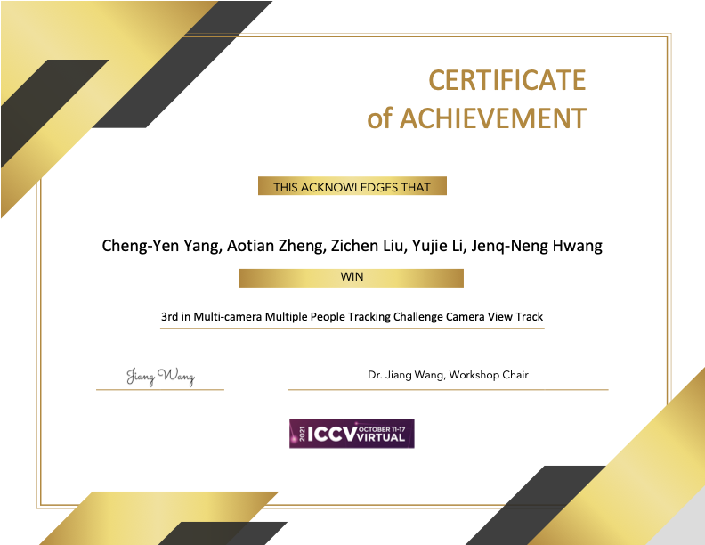
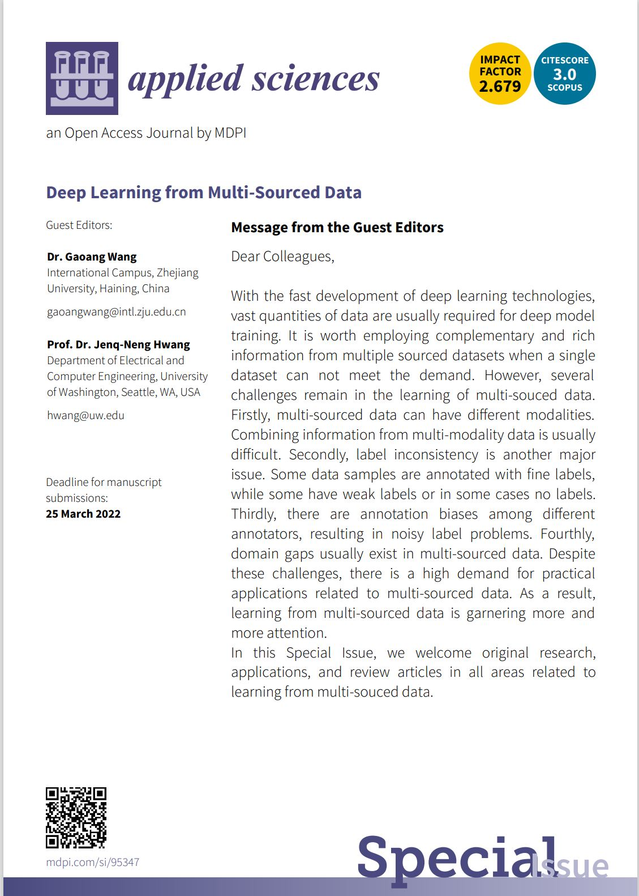
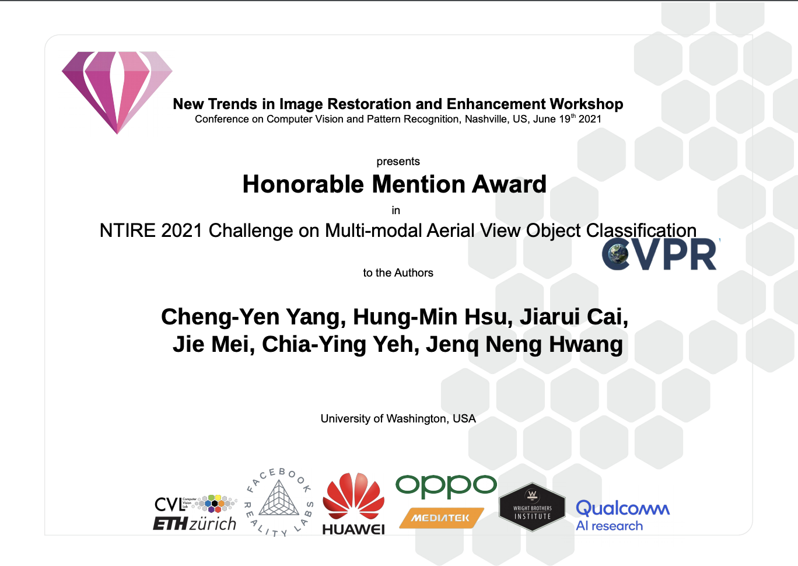
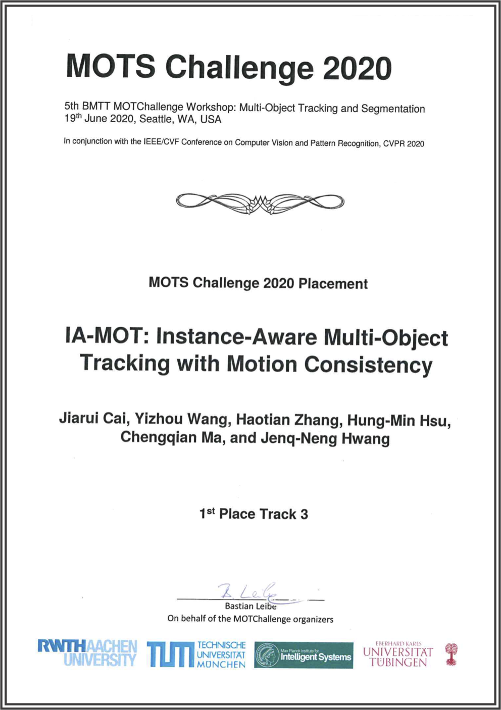

News
- 2022/09/14 GLIPv2: Unifying Localization and Vision-Language Understanding was accepted by the NeurIPS 2022 (25.6% acceptance rate)! Congratulation to Haotian!!!
- 2022/08/31 Our team won the 3rd place of the SportsMOT Track of DeeperAction Challenge at ECCV 2022! Congraulations to Hsiang-Wei, Chris and Dr.Kim!
- 2022/06/21 Grounded Language-Image Pre-training was selected as the one of the 33 finalists for the Best Paper Award at CVPR 2022!
- 2022/06/20 GaitTAKE: Gait Recognition by Temporal Attention and Keypoint-guided Embedding was accepted by the IEEE International Conference on Image Processing! Congratulation to Dr.Hsu, Yizhou and Chris!
- 2022/06/20 HCIL: Hierarchical Class Incremental Learning for Longline Fishing Visual Monitoring was accepted by the IEEE International Conference on Image Processing! Congratulation to Jay!
- 2022/06/03 Jiarui successfully defended her Ph.D. thesis: "Towards visual recognition in the wild." today! Congratulations to Dr.Cai 👩🏻🎓! 🎉🎉🎉🎉🎉🎉🎉🎉🎉🎉🎉🎉
-
2022/05/23
We'll like share the news that IEEE MMSP 2022, which will be held on September 26–28, 2022 in Shanghai, China is now calling for paper!

- 2022/05/16 We are pleased to share the news the the Data Scientist/AI/ML position (The DE and MAP announcements for the Interdisciplinary Computer Scientist/Physical Scientist/Fish Biologist, ZP-1550/1301/0482-3/4) in the FATES Advanced Tech Branch has been posted. The announcements will be open for 14- days, from 05/17/22 to 05/30/22, please refer to the links for additional info!
- 2022/04/25 Unsupervised Severely Deformed Mesh Reconstruction (DMR) from a Single-View Image for Longline Fishing was accepted by the IEEE ICME 2022 Workshop on 3D Multimedia Analytics, Search and Generation (3DMM)! Congratulation to Jay!
- 2022/04/25 GolfPose: Golf Swing Analyses with A Monocular Camera based Human Pose Estimation was accepted by the IEEE ICME 2022: The 3rd Artificial Intelligence in Sports (AI-Sports) Workshop! Congratulation to Zhongyu and Haorui!
- 2022/03/06 Unsupervised Domain Adaptation Learning for Infant Pose Recognition with Synthetic Data was accepted by the IEEE ICME 2022 (29% acceptance rate)! Congratulation to Chris and Zhongyu!
- 2022/03/02 Grounded Language-Image Pre-training was accepted by the CVPR 2022 (25.33% acceptance rate)! Congratulation to Haotian!
- 2021/12/01 LUNA: Localizing Unfamiliarity Near Acquaintance for Open-set Long-Tailed Recognition was accepted by the AAAI 2022 (15% acceptance rate)! Congratulation to Jiarui, Yizhou and Hung-Min!
-
2021/10/17
Our team is the 🏆winner of Video Track (in both MOTChallenge-STEP and KITTI-STEP dataset) in the
6th BMTT Challenge (in conjunction with ICCV 2021)!


-
2021/10/16
Our team won the 🥉3rd place of Camera-View Track in the
ICCV 2021 Multi-camera Multiple People Tracking Workshop !


-
2021/09/09 Professor Hwang will be the guest editor for a special issue: "Deep Learning from Multi-Sourced Data" for Applied Sciences. Welcome to submitted original research, applications, and review articles in all areas related to learning from multi-souced data!

- 2021/08/09 Li Chen successfully defended his Ph.D. thesis today. Congratulations to Dr. Chen! 🎉🎉🎉
- 2021/07/22 Two papers from IPL: ACE: Ally Complementary Experts for Solving Long-Tailed Recognition in One-Shot (Oral) and Track without Appearance: Learn Box and Tracklet Embedding with Local and Global Motion Patterns for Vehicle Tracking were accepted and select as oral by the ICCV 2021! Congratuations Jiarui and Gaoang!
-
2021/03/22
We won the Honorable Mention Award in NTIRE 2021 Challenge on Multi-modal Aerial View Object Classification (in conjunction with CVPR 2021)!

- 2021/01/01 We are organizing the Radar Object Detection Challenge (ROD2021) at ACM ICMR 2021. Welcome your participation! [Challenge Website] [Registration & Leaderboard]
-
2020/06/11
Our team is the winner of track 3 (multi-object tracking and segmentation in KITTI-MOTS and MOTS20 dataset with public detection)
and the runner-up of track 2 (multi-object detection, tracking and segmentation in KITTI-MOTS dataset) in the
5th BMTT Challenge in CVPR 2020 workshop. [Details...]

- 2020/06/05 Renshu Gu successfully defended her Ph.D. thesis today. Congratulations to Dr. Gu! 🎉🎉🎉
-
2020/05/04
Li Chen and his colleagues in Vascular Imaging Laboratory won the competition for artificial intelligence research by American Heart Association and Amazon Web Services through a collaborative data grant initiative (Automated Vessel Wall Screening to Predict Cardiovascular Risk) funded by AHA. Congatulations, Li!
UW Daily News Media Cover -
2019/10/25
Three papers from IPL:
Eye in the Sky: Drone-Based Object Tracking and 3D Localization,
Monocular Visual Object 3D Localization in Road Scenes
,
Exploit the connectivity: Multi-object tracking with trackletnet are accepted as orals in
ACM MultiMedia 2019.
Congratuations Haotian, Yizhou and Gaoang! 👍
Eye in the Sky Object 3D Localization TrackletNet -
2019/06/16
Our team representing the University of Washington is the Winner of Track 1 (City-Scale Multi-Camera Vehicle Tracking) and the Runner-up of Track 2 (City-Scale Multi-Camera Vehicle Re-Identification) and Track 3 (Traffic Anomaly Detection) at the AI City Challenge in CVPR 2019.
[Details...]
UWECE News - 2019/06/15 Three Ph.D. graduate from our lab this year. Congratulations to Dr. Tang, Dr. Wang, and Dr. Huang! 🎉🎉🎉
-
2019/04/01
Professor Hwang is interviewed by The Wall Street Journal.
[Full Text]
WSJ Article -
2018/06/18
Our team representing the University of Washington is the Winner of Track 1 (Traffic Flow Analysis) and the Winner of Track 3 (Multi-camera Vehicle Detection and Reidentification) at the AI City Challenge Workshop at CVPR 2018.
[Details...]
Paper Code Track1 Demo Track3 Demo UWEE News -
2017/08/05
Our group is the Winner of Track 2 (AI City Applications Track) at the 2017 IEEE Smart World NVIDIA AI City Challenge.
[Details...]
Nvidia Blog